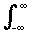

MT2002 Analysis
More about the delta-function
The Heaviside function H is defined by H(x) = 0 if x ≤ 0 and H(x) = 1 if x > 0.
Now observe that  and so it is reasonable to regard
and so it is reasonable to regard  .
.
Of course H doesn't have a properly defined tangent at x = 0 so it is stretching things a bit to think of it like this.
Notice that if you want to play this game a bit more and integrate the Heaviside function itself, you will find that  is a function which is 0 if x < 0 and equal to x if x > 0 and so it is the continuous (but not differentiable) function (x + |x|)/2.
is a function which is 0 if x < 0 and equal to x if x > 0 and so it is the continuous (but not differentiable) function (x + |x|)/2.
 What happens if you differentiate the δ-function ?
What happens if you differentiate the δ-function ?
Well, you can think of the δ-function as being approximated by a sequence of functions which concentrate their area closer and closer to the origin.
Graphs of these function are shown on the left of the diagram.
You can differentiate this sequence of functions to get a sequence approximating Dδ looking like the graphs on the right.
This gives something like a dipole which is useful for applied mathematicians and physicists to model things like magnetism.
Note that if we use convolution, we have f (x) = f * δ(x) = f (t)δ(x-t) dt and so d/dxf (x) = d/dxf (t)δ(x-t) dt = f (t)d/dxδ(x-t) dt = f * Dδ(x). Hence convolution with Dδ is the same as differentiation.
All this is a bit shaky, but it turned out that dealing with functions like this gave the right answers and so physicists in particular used these ideas to set up the mathematics they needed to do Quantum Mechanics.
In the 1950's the French mathematician Laurent Schwartz (born 1915) found a way of making all of this rigorous and developed what is now called the Theory of Distributions. This has had a big influence on the way mathematicians deal with Partial Differential Equations.
JOC September 2001